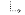

	<!--#include("header.html")-->

	<div id="xeDocsBody">
		<div id="xeDocsTree">
			<div id="xeDocsSearch">
				<form action="{getUrl()}" method="get" >
					<input type="hidden" name="vid" value="{$vid}" />
					<input type="hidden" name="mid" value="{$mid}" />
					<input type="hidden" name="category" value="" />
					<input type="hidden" name="search_target" value="title_content" />
					<input type="hidden" name="act" value="dispXedocsSearchResults" />

					<input id="xeDocsSearchText" type="text" name="search_keyword" />
					<input id="xeDocsSearchButton" src="img/search_button.png" type="image" value="{$lang->Search}" alt="{$lang->Search}" title="{$lang->Search}" />
				</form>
			</div>
			<h3>Table of contents:</h3>
			<!--@if(count($documents_tree))-->
			<ul>
				<!--@foreach($documents_tree as $node)-->
				<li class="xedocsTreeNode">
					<!--@if($node->type == 'root' || $node->type == 'active_root')-->
						
					<!--@elseif($node->type == 'parent')-->
						
					<!--@elseif($node->type == 'sibling')-->
						
					<!--@elseif($node->type == 'child')-->
						
					<!--@elseif($node->type == 'current')-->
						
					<!--@end-->
					<a href="{$node->href}">
						{$node->title}
					</a>
				</li>
				<!--@end-->
			</ul>
			<!--@end-->
		</div>
		<div id="xeDocsVersion">
			<div id="xeDocsEditorActions">
				<a href=""></a>
				<a href="{getUrl('act','dispXedocsEditPage')}"></a>
				<a href="#" onclick="if(confirm('{$lang->confirm_delete}')) { doDeleteManual('{$oDocument->document_srl}'); }; return false;"></a>
                                <a href="{getUrl('act','dispXedocsHistory')}">History</a>
			</div>
			<p>{$lang->versions}
				<!--@foreach($version_labels as $value)-->

					<!--@if($value->is_current_version)-->
						<span>{$value->vlabel}</span>&nbsp;|&nbsp;
					<!--@else-->
						<a href='{$value->href}'> {$value->vlabel} </a>&nbsp;|&nbsp;
					<!--@end-->

				<!--@end-->
			</p>

			<!--@if($oDocument && $oDocument->isExists())-->
			<!--@if($oDocument->isExists()&&$act!='dispXedocsEditPage'&&$grant->manager)-->
			<div class="wikiRead">
				<div class="wikiReadPadding">

				<!--
					<form action="{getUrl('act','dispXedocsContent','entry','','document_srl','')}" method="get" class="xeDocsSearchForm">
						<input type="hidden" name="mid" value="{$mid}" />
						<input type="hidden" name="vid" value="{$vid}" />
						<input class="xeDocsInputText" type="text" name="entry" />
						<input class="xeDocsSearchButton" src="img/icon_search.png" type="image" value="{$lang->cmd_move}" alt="{$lang->cmd_move}" />
					</form>
				-->

					<!--@if($visit_log)-->
					<div class="visitLog">
						{@ $bFirst = true; }
						<!--@foreach($visit_log as $_entry)-->
							<!--@if(!$bFirst)--> > <!--@else-->{@ $bFirst = false; }<!--@end--> <a href="{getUrl('entry',$_entry,'document_srl','')}">{$_entry}</a>
						<!--@end-->
					</div>
					<!--@end-->

					<div style='display: none;'>
						<!--@if($history)-->
							<a href="#" class="author member_{$history->member_srl}" onclick="return false;">{$history->nick_name}</a>
						<!--@else-->
							<!--@if(!$oDocument->getMemberSrl())-->
								<!--@if($oDocument->isExistsHomepage())-->
									<a href="{$oDocument->getHomepageUrl()}" onclick="window.open(this.href);return false;" class="author">{$oDocument->getNickName()}</a>
								<!--@else-->
									{$oDocument->getNickName()}
								<!--@end-->
							<!--@else-->
								<a href="#popup_menu_area" class="member_{$oDocument->get('member_srl')} author" onclick="return false">{$oDocument->getNickName()}</a>
							<!--@end-->
						<!--@end-->

						<span class="ipAddress"><!--@if($grant->manager || $module_info->display_ip_address!='N')-->{$oDocument->getIpaddress()}<!--@end--></span>
					</div>


				</div>
			</div>
			<!--@end-->
			<!--@else-->
				<div class="wikiRead">
					<div class="wikiReadHeader">
						<div class="titleArea">

						</div>
					</div>
				</div>
				<!--@if($visit_log)-->
				<div class="visitLog">
					{@ $bFirst = true; }
					<!--@foreach($visit_log as $_entry)-->
						<!--@if(!$bFirst)--> > <!--@else-->{@ $bFirst = false; }<!--@end--> <a href="{getUrl('entry',$_entry)}">{$_entry}</a>
					<!--@end-->
				</div>
				<!--@end-->
			<!--@end-->
		</div>

		<h2>{$oDocument->get('title')}</h2>

		<!--@if(!$oDocument->isExists())-->
		<div id="rightContainer">
				<div id="rightcontent" style='margin:2px; color:red; margin-right:20px; font-size:16px; font-weight:bold;' >
				<br />
				<br />
				We could not find your requested manual page. Please click on a node in content tree to see other manual pages.
				<br />
				<br />
			</div>
		</div>
		<!--@else-->

		<div id="showHideTree" onclick="hidediv1('treeList'); return false;" alt="Close Tree" title="Close tree"></div>

		<div id="rightContainer">
			<!--#include("breadcrumbs.html")-->
			<div class="cleared"></div>
			<div id="rightcontent">{$oDocument->get('content')}

			<!--@if($module_info->toc_location=='Left')-->
				<div id='footer_links' class="wikiReadFooter">
			<!--@else-->
			<!--@end-->
					<div class="manualNavigation" >

					<!--@if($oDocumentPrev)-->
						<p class="wikiPrev" style="width: 50%;">
							<span>Previous document:</span>

							<a href="{getSiteUrl($site_module_info->domain, '','mid',$mid,'entry',$oPrevDocEntry)}">

							{$oDocumentPrev->getTitle()}</a>
						</p>
					<!--@end-->

					<!--@if($oDocumentNext)-->
						<p class="wikiNext" style="width: 50%; text-align: right;">
							<span>Next document:</span>


							<a href="{getSiteUrl($site_module_info->domain, '','mid',$mid,'entry',$oNextDocEntry)}">

							{$oDocumentNext->getTitle()}</a>
						</p>
					<!--@end-->
						<div class="cleared"></div>
					</div> <!--end of div manualNavigation-->
				</div> <!-- end of footer_links-->
			</div> <!--end of div right content-->
			<!--@end-->

			<!--@if($oDocument->isExists())-->
				<div id="comments">
				<!--@if($oDocument->allowComment())-->
                                    <a name="comment"></a>
                                    <!--#include("./comment.html")-->

                                    <!--@if($grant->write_comment && $oDocument->isEnableComment() )-->
                                      <form action="./" method="post" onsubmit="return procFilter(this, insert_comment)" class="wikiEditor" >
                                        <input type="hidden" name="mid" value="{$mid}" />
                                        <input type="hidden" name="document_srl" value="{$oDocument->document_srl}" />
                                        <input type="hidden" name="comment_srl" value="" />
                                        <input type="hidden" name="content" value="" />
                                            <div class="wikiWrite commentEditor">
                                                <div class="editor">{$oDocument->getCommentEditor()}</div>

                                                <div class="editorOption">
                                                <!--@if(!$is_logged)-->
                                                   <input type="text" name="nick_name" class="inputText userName" value="{$lang->writer}" onfocus="this.value=''" />
                                                                   <input type="password" name="password" class="inputText userPw" value="{$lang->password}" onfocus="this.value=''" />
                                                                   <input type="text" name="email_address" class="inputText emailAddress" value="{$lang->email_address}" onfocus="this.value=''" />
                                                                   <input type="text" name="homepage" class="inputText homePage" value="{$lang->homepage}" onfocus="this.value=''" />
                                                <!--@end-->

                                                                <!--@if($is_logged)-->
                                                                        <input type="checkbox" name="notify_message" value="Y" id="notify_message" class="inputCheck" />
                                                                        <label for="notify_message">{$lang->notify}</label>
                                                                <!--@end-->
                                                                        <input type="checkbox" name="is_secret" value="Y" id="is_secret" class="inputCheck" />
                                                                        <label for="is_secret">{$lang->secret}</label>
                                                </div>

                                                <div class="wikiNavigation">
                                                    <span class="buttonOfficial"><input type="submit" value="{$lang->cmd_comment_registration}" accesskey="s" /></span>
                                                </div>

                                            </div>

                                        </form>
                                    <!--@end-->
				<!--@end-->
				</div>
			<!--@end--> <!--has_page-->
		</div>
		<div class="cleared"></div>
	</div>

<!--#include("footer.html")-->
